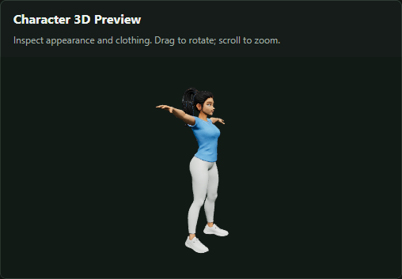
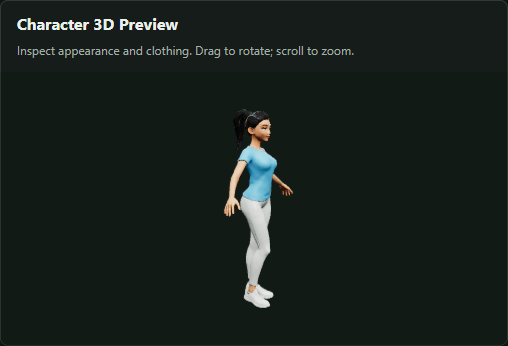

Turn natural language into
game characters & motion.
Describe how your character should look and move. CastSmith Agent coordinates 3D character generation, binding checks and animation creation, then delivers downloadable GLB character and motion assets for your game project.
Press play. No local service required.
A real production session from October 27, 2026: the actual character, free binding test, and synchronized adapted and source motion.
16.2 seconds · 1280 × 960 · 30 fps · H.264 MP4 · No audio
Recorded from the actual preview canvases, arranged in four panels with English title overlays. No desktop or chat capture. Approximately two eight-second cycles, not necessarily starting at frame zero. Download the MP4
“This example worked very well.” English translation of the user's feedback after delivery. A successful workflow does not mean all quality warnings were resolved.
From brief to delivery, decisions stay in chat.
Capture character and motion together
A black ponytail, white athletic leggings and aerobics. Establish an adult woman aged 20–25 and save an eight-second, in-place looping motion.
Generate the first character
Validate the brief, disclose potential Tripo credit use and generate after consent. Open the exact version for appearance review.
Iterate on specific feedback
“Make her figure a little slimmer and her face more beautiful.” Create a second candidate with fresh paid consent, preserving the original.
Run the free binding test automatically
After appearance acceptance, select that version and run local RigTest. Verify model readiness and advancing animation time.
Generate the saved aerobics request
Disclose binding risks, obtain binding acceptance and authorization for the exact SayMotion request, then start without asking for unchanged requirements again.
Compare and deliver
Show source and adapted motion. Deliver the character, motion, source, manifests and report, checking sizes and SHA-256 hashes. Delivery is not acceptance.
Specific feedback. An iteration that preserves the original.
Actual workspace screenshots. Camera angles differ; these are not matched-angle body measurements or automated beauty scores.


The production conversation
An English translation and edited account of the original session, not a verbatim transcript. Tool output and automated continuation reminders are omitted. Read the detailed conversation archive ↗
01 / Start with natural language
User
Generate a youthful young woman with a black ponytail, wearing white fitted leggings, doing aerobics.
Assistant
Establish an adult character and save both the appearance brief and eight-second looping aerobics specification. Generate the character first, then run a free binding test and create motion. Request authorization only for Tripo character generation, with potential credit use disclosed.
User
I agree.
02 / Review the first version and request a change
Assistant
The character is generated and its exact-version preview is loaded. Structural checks passed. Please inspect the ponytail, face and clothing; aerobics has not been generated yet.
User
Make her figure a little slimmer and her face more beautiful.
Assistant
Refine the figure and facial features while keeping the adult setting, ponytail and outfit. The revised brief passes local validation. A second Tripo generation may use more credits; the original is preserved.
User
I agree.
03 / Accept the second appearance and test binding
Assistant
The second version is generated and visible. Structural checks passed; dynamic binding and clothing collisions are unverified. This confirmation accepts only the appearance and automatically starts the free binding test.
User
I agree.
Assistant
Appearance acceptance is recorded. RigTest is complete, loaded and playing: time advanced from approximately 3.98 to 5.18 seconds. Possible foot-slide warnings remain; joint deformation needs human inspection.
04 / Disclose risks and authorize this exact motion
Assistant
The saved eight-second looping, in-place aerobics request includes side steps, arm swings, alternating knee lifts and upward reaches. Explain that agreement accepts the binding result with disclosed risks and authorizes potential credits for this exact SayMotion request.
User
I agree.
Assistant
Record the binding decision and start generation. Do not regenerate the character or ask again for unchanged motion requirements.
05 / Generate, compare and deliver
Assistant
The eight-second motion is generated and exported. Source and adapted previews are loaded, synchronized and looping. Copy files and verify hashes; disclose foot-slide, rotation-spike, skin-stretch and loop-seam warnings without claiming automatic repair.
User
This example worked very well. I have committed and pushed the changes to the GitHub repo. Now turn this chat session and the generated UI content into a page on GitHub.
06 / Make the local result viewable remotely
User
Make the project public and create its repository page. The local website cannot be opened remotely, so save it as an MP4 and embed it in the page.
This page
The public repository and GitHub Pages serve a static site. The recorded MP4 needs no localhost service, 3D server or provider account. No additional paid generation was submitted. The published text and demonstration media have since been converted to English.
The result is visible. The risks should be, too.
Structural validity is not a clean quality bill.
The machine report remains needs_review. At delivery, motion review was pending.
Publishing or translating this archive has not changed any asset review state.
- Warnings include possible foot sliding, skin stretching and a velocity discontinuity at the loop seam.
- Adapted rotation spikes occur around 3.1–5.8 seconds. The source has a few such warnings; the adapted result has more. The cause is unresolved.
- Clothing intersections, motion semantics, true contacts, skin-weight correctness and game-engine import remain unverified.
- No general skin-weight repair, IK foot locking or collision repair is claimed. The video does not mean these issues were resolved.
Evidence for this exact session, not a generic demo.
- First character
build-0a76836facf64f6db191e6936af2b106- Second character
build-5b37f1acc8314ac7a93c004958011ea0- Free binding test
build-e4a5fa7169924efb816ed57fa2e22189- Aerobics / clip 0
build-6f8df30edd4a45c9a6323b6b1bd8e2be
Only documentation, screenshots and a demonstration MP4 are published. Credentials, the database, original GLBs and full quality reports remain in the original workspace. Read the case record and delivery notes ↗